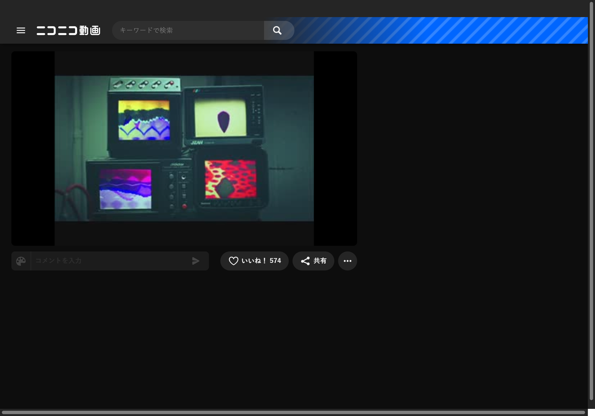

Niconico Premium 会员到底值不值？一笔一笔算清楚
从免费到 Premium，Niconico 会员的价格和权益差异到底在哪？分三种使用强度算账，帮你判断该不该掏这笔钱。
开头：我犹豫了三个月才下决心
事情是这样的——我在 Niconico官网 混了快两年，每天刷生放送、看唱见翻唱、翻 MAD 剪辑，一直用免费账号。直到有一天 NG 关键词加到第 201 个的时候弹了个框：「免费会员最多 200 个关键词，升级 Premium 可扩到 400」。
我愣了一下，然后开始想一个问题：Premium 到底值不值这个价？
不是那种一拍脑门就付款的问题——我想把账算清楚。毕竟 Niconico 不像 YouTube 那样广告烦人，免费版看视频基本没障碍。那 Premium 到底多给了什么？这些东西对我来说值多少钱？
定价拆解：免费和 Premium 的差距到底在哪
先按功能一条条列，价格我从官网查的，客户端从官方下载拿的，月费折人民币大约三十多块，年付会更便宜一些。下面是我整理的核心差异：
观看体验
| 功能 | 免费版 | Premium |
|---|---|---|
| 视频最高画质 | 720p | 1080p |
| 直播最高画质 | 720p | 1080p |
| 弹幕数量 | 无硬性上限 | 无硬性上限 |
| 广告 | 有前贴片和侧边栏广告 | 全部去除 |
说实话画质这一条我纠结了很久。Niconico 很多视频本身就是用户自制的，源画质可能本来就到不了 1080p。但直播不同——生放送的主播推流如果是 1080p，免费用户只能看到 720p 拉伸的。我常看的几个游戏实况主播，画面里快速移动的角色在 720p 下确实有点糊。
广告这条我反而没那么敏感。Niconico 的广告不像国内视频网站那样每集插三次中插，主要就是视频前面几秒和侧边栏 banner。但如果你一天刷十几个视频，积累下来也挺烦的。
NG 过滤系统（这是我最在意的）
| 功能 | 免费版 | Premium |
|---|---|---|
| NG 关键词上限 | 200 | 400 |
| NG 用户上限 | 200 | 500 |
| 完全隐藏被屏蔽用户 | ✗ | ✓ |
这才是触发我思考的那条——200 个关键词说起来多，实际上混久了真不够用。我现在屏蔽了「グロ」相关的血腥标签、十几个恶意投稿者、还有一堆烦人的营销账号。200 条用了 187 条，每天都在纠结要不要把某些词删掉腾出位置。
Premium 给了 400 关键词和 500 用户上限，还能彻底隐藏被屏蔽用户的所有痕迹——免费版只是不显示他们的弹幕，但他们的视频还是会偶尔出现在推荐里。
创作者相关权益
| 功能 | 免费版 | Premium |
|---|---|---|
| 视频最大时长 | 3 小时 | 6 小时 |
| 观看者数据面板 | 基础（播放/弹幕/收藏） | 增强（年龄/地区分布） |
| 直播礼物功能 | ✗（只能收） | ✓（可以送） |
| 付费频道 | ✗ | ✓（可开通/订阅） |
我自己也偶尔投个翻唱视频，3 小时上限基本够用了，因为我从来没剪过超过 30 分钟的视频。但如果你做长游戏实况——比如一条《艾尔登法环》全 Boss 通关视频可能要 5 小时——那免费版直接卡脖子。
观看者数据那条挺有意思的。免费版只能看到播放量和弹幕数，Premium 能看到观众年龄和地区分布。我投的视频主要面向国内观众，但想知道日本本地的反应，这个数据就有用了，Niconico文档 里对数据面板的解读写得挺细的。
礼物功能……说实话我刷了两年从没送过礼物。但我关注的几个主播确实靠礼物维持着更新频率，尤其是全职做生放送的。
算账：分三类人看值不值
好了，功能列完了，现在该算账了。我按使用强度分三类，每类算一遍。
轻度用户：每天刷视频不超过 1 小时
这类人就是偶尔想起来看看，可能是被朋友安利了某个唱见，或者在 Twitter 上刷到 MAD 剪辑。
免费版够不够？ 完全够。720p 画质看个热闹没问题，广告也能忍，200 个 NG 关键词用不到一半。
升级 Premium 的成本？ 月费三十多块，一年四百。对每天只花一小时在上面的人来说，这钱不如省下买杯奶茶。
轻度用户结论：别付。 把钱留给你真正重度使用的平台。
主力用户：每天 2-3 小时，固定刷生放送
这就是我，也是大多数 Niconico 常驻用户的画像。每天下班后固定刷几个关注主播的生放送，周末有空翻唱见翻唱和游戏实况。
免费版的痛点开始显现：
- NG 关键词快满了，每天都在删删改改
- 直播 720p 画质看快速动作有点糊
- 广告虽然不多，但每天刷二十多个视频也累积出烦躁感
Premium 给我带来的具体收益：
- 400 关键词上限直接把我从删改焦虑里解放出来
- 1080p 直播画面清晰度提升明显，尤其是格斗游戏实况
- 无广告让整个观看过程更流畅，算下来每天能省出几分钟的广告时间
经济账： 月费三十多块，每天大约花一块钱。一块钱换我不用天天纠结 NG 关键词、看清晰直播、不被广告打断——我觉得值。
主力用户结论：付。 这笔钱换的是「不用凑合」的体验。
重度用户：每天 4 小时以上，自己也做投稿
这类人要么是每天泡在生放送的全职观众，要么是自己做视频投稿的半职业创作者，或者两者兼有。
免费版的硬伤：
- 如果你做长视频，3 小时上限直接卡死
- 200 用户屏蔽上限远远不够——重度用户关注的创作者多、遇到的骚扰用户也多
- 免费版没有观看者年龄/地区数据，做内容调整全靠猜
- 想给主播送礼物只能找朋友代充
Premium 的价值在这类用户身上最大化：
- 6 小时视频上限覆盖绝大多数长内容需求
- 500 用户屏蔽彻底解决垃圾内容问题
- 详细数据面板让内容运营有据可依
- 送礼物功能是对支持的主播的直接反馈
经济账： 还是月费三十多块，但每单位时间成本更低——重度用户每天花五毛，换来的是创作者级别的完整功能链。
重度用户结论：闭眼付。 甚至可以考虑年付更划算。

替代方案：不付这笔钱有没有别的路
当然有，免费终究是免费。但要清楚代价是什么：
方案一：继续用免费版，忍
代价就是画质妥协、NG 关键词纠结、看广告。如果你能接受这些小麻烦，那 Premium 确实不是必需品。很多用户好几年都不升级，照样混得很开心。
方案二：降低使用频率
如果每天只刷半小时，免费版的所有痛点都会缩小甚至消失。但这等于把 Niconico 从「日常习惯」降级成「偶尔消遣」——对已经养成刷生放送习惯的人来说可能不太现实。
方案三：转战其他平台
说实话不太推荐。Niconico 的弹幕文化、唱见舞见生态、VOCALOID 关联内容，这些是它独有的。YouTube 也有翻唱和游戏实况，但没有那种视频下方滚动的弹幕层叠感。Bilibili 弹幕做得好，但内容生态完全不同——Niconico 是「日本创作者主场」，B 站是「中文创作者主场」。
结论：三秒对号入座
最后说人话，别搞复杂：
- 每天刷不到 1 小时 → 别付，忍忍就过去了
- 每天 2-3 小时，固定刷生放送 → 付，一个月一杯奶茶钱换舒心
- 每天 4 小时以上，自己也做内容 → 闭眼付，这钱是刚需
我自己属于第二类，已经订了年付。NG 关键词从 187 条直接放飞到 312 条，再也不用每天删来删去了。直播 1080p 的画质提升在格斗游戏里尤其明显，至少能看清角色的出招动作而不是糊成一团色块。
当然这只是我的账。你得自己算算——你每天在 Niconico 花多久？200 关键词够不够用？720p 画质能不能忍？广告烦不烦？
每个人的「值不值」标准不一样。但有一点我可以确定：如果你已经在这个平台每天花两小时以上，Premium 绝对比你想的划算。

顺带提一句，这套 Niconico 的资料在 GitHub、Gitee、GitCode 三个仓库都能拿到，方便不同网络环境的朋友查阅和备份。